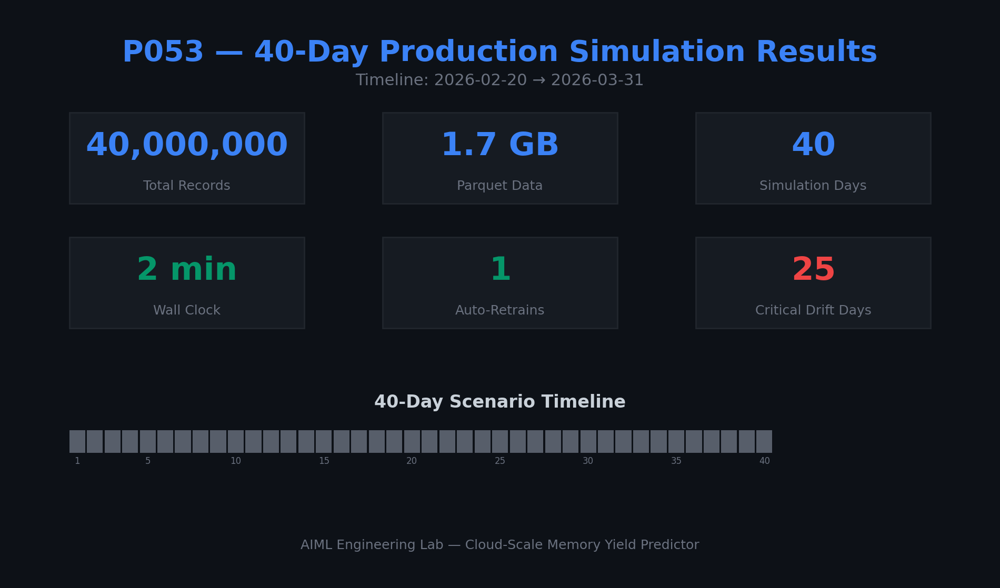
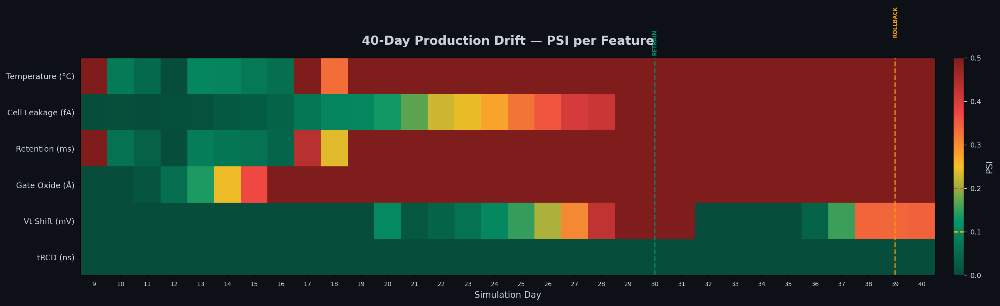
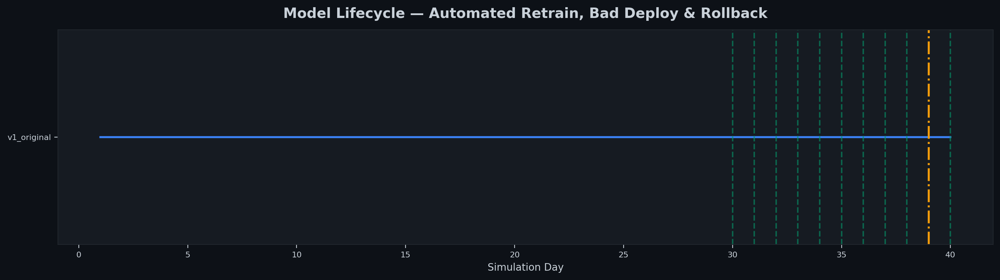
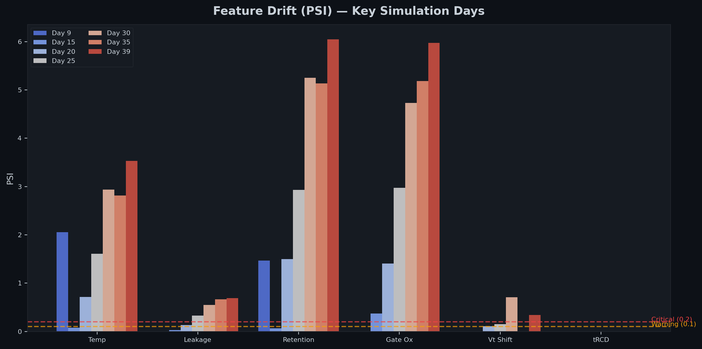
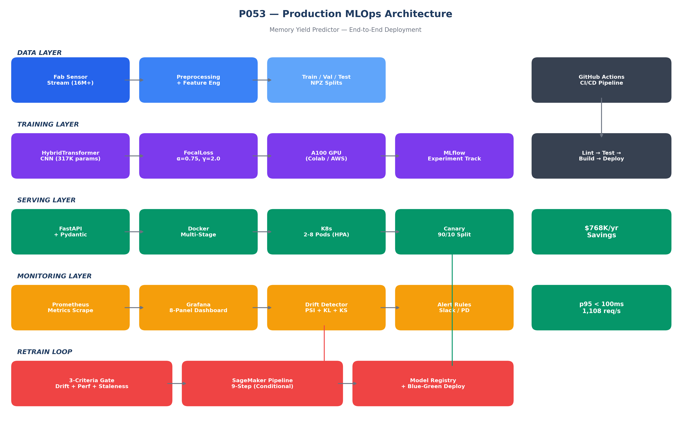
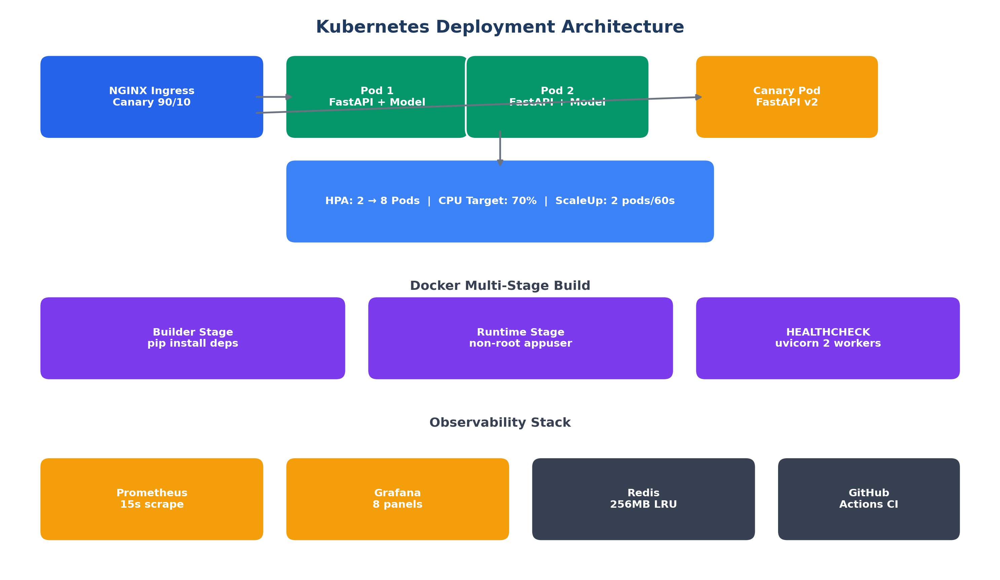
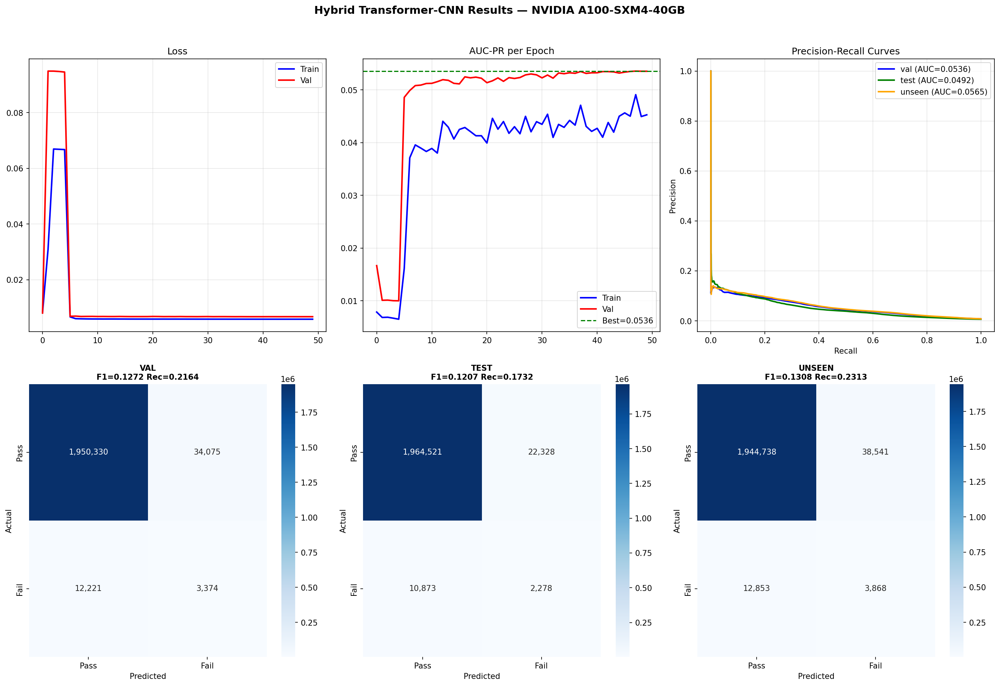
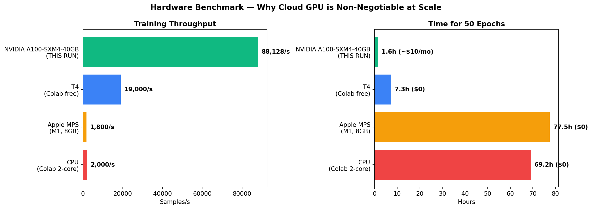
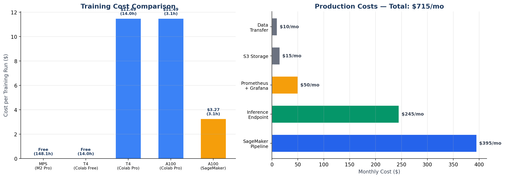
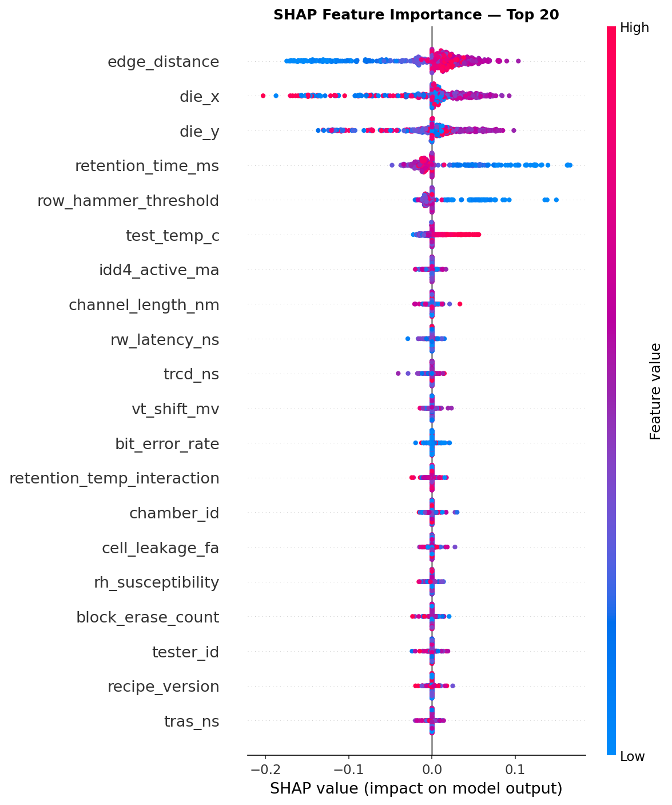

DRAM Memory Yield Predictor
40-Day Production Learning Report
Interview-ready and PDF-ready operating record for a full MLOps pipeline: 16M-row training, HybridTransformerCNN, Airflow, Kafka, Spark, MLflow, S3, AWS GPU retraining, canary evaluation, rollback, incident recovery, and cost discipline.
What this document is
A living HTML report that can be regenerated as future production days complete. It starts with high-level KPIs, then gives the full day-by-day ledger, followed by narrative learnings, issues, fixes, decisions, cost, and interview talking points.
Generated: 2026-07-17 00:33 UTC
Output: docs/P053_40_Day_Production_Learning_Report.html
1. Executive KPIs
The project demonstrates an end-to-end production MLOps system for DRAM yield prediction. The key point for interviews: this is not just a model result; it is a full operational lifecycle with drift detection, retraining, canary promotion, rollback, cloud cost control, and failure recovery.
2. System and Model
Dataset and Signal
| Training rows | 10,000,000 |
|---|---|
| Columns | 37 total; 29 numeric; 7 categorical |
| Fail rate | 0.617% |
| Label noise | 12,464 noisy labels |
| Missing cells | 3,796,537 (1.03%) |
| Spatial effect | Edge fail rate 1.154% vs center 0.353%; ratio 3.3x |
Training and Model
| Architecture | HybridTransformerCNN |
|---|---|
| Parameters | 317,633 |
| A100 GPU | NVIDIA A100-SXM4-40GB, 39.5 GB VRAM |
| A100 throughput | 88,128 samples/sec |
| T4 throughput | 18,868 samples/sec |
| Mixed precision | bfloat16 on A100; float16 + GradScaler on T4 when stable |
Model Metrics
| Split | AUC-PR | AUC-ROC | F1 | Recall | Precision | TP | FP | FN | TN |
|---|---|---|---|---|---|---|---|---|---|
| A100 Val | 0.0536 | 0.8157 | 0.1272 | 21.6% | 9.0% | 3,374 | 34,075 | 12,221 | 1,950,330 |
| A100 Test | 0.0492 | 0.7994 | 0.1207 | 17.3% | 9.3% | 2,278 | 22,328 | 10,873 | 1,964,521 |
| A100 Unseen | 0.0565 | 0.8148 | 0.1308 | 23.1% | 9.1% | 3,868 | 38,541 | 12,853 | 1,944,738 |
| T4 Val | 0.0524 | 0.8100 | 0.1249 | 21.1% | 8.9% | 3,294 | 33,870 | 12,301 | 1,950,535 |
3. 40-Day Master Table
This table is the operational ledger: rows, data volume, drift counts, model version, gate outcome, artifacts, and runtime for every day.
| Day | Date | Rows | Parquet MB | Scenario | Model | Crit | Warn | Max PSI | Dominant PSI Feature | Gate/Event | S3 Files | Elapsed Sec |
|---|---|---|---|---|---|---|---|---|---|---|---|---|
| 1 | 2026-02-20 | 5,000,000 | 214.1 | steady | v1_original | - | - | - | - | Baseline | 1 | 32.2 |
| 2 | 2026-02-21 | 5,000,000 | 213.7 | steady | v1_original | - | - | - | - | Baseline | 1 | 30.9 |
| 3 | 2026-02-22 | 5,000,000 | 213.7 | steady | v1_original | - | - | - | - | Baseline | 1 | 32.0 |
| 4 | 2026-02-23 | 5,000,000 | 214.1 | steady | v1_original | - | - | - | - | Baseline | 1 | 31.1 |
| 5 | 2026-02-24 | 5,000,000 | 214.1 | steady | v1_original | - | - | - | - | Baseline | 1 | 32.6 |
| 6 | 2026-02-25 | 5,000,000 | 213.7 | steady | v1_original | - | - | - | - | Baseline | 1 | 30.9 |
| 7 | 2026-02-26 | 5,000,000 | 214.0 | steady | v1_original | - | - | - | - | Baseline | 1 | 30.9 |
| 8 | 2026-02-27 | 5,000,000 | 214.0 | steady | v1_original | - | - | - | - | Baseline | 1 | 31.3 |
| 9 | 2026-02-28 | 5,000,000 | 213.4 | false alarm | v1_original | 2 | 0 | 2.05 | test_temp_c (2.05) | Clean | 2 | 33.9 |
| 10 | 2026-03-01 | 5,000,000 | 214.0 | auto recover | v1_original | 0 | 0 | 0.08 | test_temp_c (0.08) | Clean | 2 | 34.4 |
| 11 | 2026-03-02 | 5,000,000 | 214.0 | gradual drift | v1_original | 0 | 0 | 0.05 | test_temp_c (0.05) | Clean | 2 | 33.7 |
| 12 | 2026-03-03 | 5,000,000 | 213.9 | gradual drift | v1_original | 0 | 0 | 0.06 | gate_oxide_thickness_a (0.06) | Clean | 2 | 33.4 |
| 13 | 2026-03-04 | 5,000,000 | 214.1 | gradual drift | v1_original | 0 | 1 | 0.14 | gate_oxide_thickness_a (0.14) | Warning | 2 | 37.8 |
| 14 | 2026-03-05 | 5,000,000 | 214.1 | gradual drift | v1_original | 1 | 0 | 0.24 | gate_oxide_thickness_a (0.24) | Clean | 2 | 33.5 |
| 15 | 2026-03-06 | 5,000,000 | 214.1 | gradual drift | v1_original | 1 | 0 | 0.37 | gate_oxide_thickness_a (0.37) | Clean | 2 | 34.0 |
| 16 | 2026-03-07 | 5,000,000 | 214.1 | gradual drift | v1_original | 1 | 0 | 0.53 | gate_oxide_thickness_a (0.53) | Clean | 2 | 37.8 |
| 17 | 2026-03-08 | 5,000,000 | 213.5 | gradual drift | v1_original | 3 | 0 | 0.72 | gate_oxide_thickness_a (0.72) | Blocked by staleness | 2 | 33.5 |
| 18 | 2026-03-09 | 5,000,000 | 213.7 | gradual drift | v1_original | 3 | 0 | 0.92 | gate_oxide_thickness_a (0.92) | Blocked by staleness | 2 | 33.4 |
| 19 | 2026-03-10 | 5,000,000 | 213.5 | sudden shift | v1_original | 3 | 1 | 1.45 | retention_time_ms (1.45) | Blocked by staleness | 2 | 34.2 |
| 20 | 2026-03-11 | 5,000,000 | 213.5 | threshold 1 | v1_original | 3 | 2 | 1.49 | retention_time_ms (1.49) | Blocked by staleness | 2 | 37.0 |
| 21 | 2026-03-12 | 5,000,000 | 213.5 | continued drift | v1_original | 3 | 1 | 1.71 | gate_oxide_thickness_a (1.71) | Blocked by staleness | 2 | 33.5 |
| 22 | 2026-03-13 | 5,000,000 | 213.2 | continued drift | v1_original | 4 | 0 | 2.30 | retention_time_ms (2.30) | Blocked by staleness | 2 | 33.8 |
| 23 | 2026-03-14 | 5,000,000 | 213.3 | continued drift | v1_original | 4 | 0 | 2.42 | retention_time_ms (2.42) | Blocked by staleness | 2 | 45.4 |
| 24 | 2026-03-15 | 5,000,000 | 213.2 | continued drift | v1_original | 4 | 1 | 2.99 | retention_time_ms (2.99) | Blocked by staleness | 2 | 33.6 |
| 25 | 2026-03-16 | 5,000,000 | 213.2 | continued drift | v1_original | 4 | 1 | 2.97 | gate_oxide_thickness_a (2.97) | Blocked by staleness | 2 | 33.4 |
| 26 | 2026-03-17 | 5,000,000 | 213.0 | threshold 2 | v1_original | 5 | 0 | 4.48 | retention_time_ms (4.48) | Blocked by staleness | 2 | 37.7 |
| 27 | 2026-03-18 | 5,000,000 | 213.3 | worsening | v1_original | 5 | 0 | 3.68 | gate_oxide_thickness_a (3.68) | Blocked by staleness | 2 | 38.6 |
| 28 | 2026-03-19 | 5,000,000 | 213.0 | worsening | v1_original | 5 | 0 | 4.41 | retention_time_ms (4.41) | Blocked by staleness | 2 | 33.9 |
| 29 | 2026-03-20 | 5,000,000 | 213.1 | worsening | v1_original | 5 | 0 | 4.90 | retention_time_ms (4.90) | Blocked by staleness | 2 | 33.5 |
| 30 | 2026-03-21 | 5,000,000 | 213.0 | worsening | v2_retrained_day30 | 5 | 0 | 5.25 | retention_time_ms (5.25) | Retrain | 2 | 11,820.6 |
| 31 | 2026-03-22 | 5,000,000 | 213.0 | retrain trigger | v2_retrained_day30 | 5 | 0 | 5.81 | retention_time_ms (5.81) | Blocked by staleness | 2 | 33.7 |
| 32 | 2026-03-23 | 5,000,000 | 213.0 | post retrain recovery | v2_retrained_day30 | 4 | 0 | 5.25 | gate_oxide_thickness_a (5.25) | Blocked by staleness | 2 | 34.2 |
| 33 | 2026-03-24 | 5,000,000 | 213.0 | post retrain recovery | v2_retrained_day30 | 4 | 0 | 6.03 | retention_time_ms (6.03) | Blocked by staleness | 2 | 34.4 |
| 34 | 2026-03-25 | 5,000,000 | 213.0 | post retrain recovery | v2_retrained_day30 | 4 | 0 | 5.77 | retention_time_ms (5.77) | Blocked by staleness | 2 | 33.8 |
| 35 | 2026-03-26 | 5,000,000 | 213.0 | post retrain recovery | v2_retrained_day30 | 4 | 0 | 5.18 | gate_oxide_thickness_a (5.18) | Blocked by staleness | 2 | 34.2 |
| 36 | 2026-03-27 | 5,000,000 | 213.6 | second drift | v2_retrained_day30 | 4 | 0 | 6.32 | retention_time_ms (6.32) | Blocked by staleness | 2 | 33.5 |
| 37 | 2026-03-28 | 5,000,000 | 213.6 | second drift | v2_retrained_day30 | 4 | 1 | 6.09 | retention_time_ms (6.09) | Blocked by staleness | 2 | 37.0 |
| 38 | 2026-03-29 | 5,000,000 | 213.6 | second drift | v2_retrained_day30 | 5 | 0 | 5.81 | gate_oxide_thickness_a (5.81) | Blocked by staleness | 2 | 33.6 |
| 39 | 2026-03-30 | 5,000,000 | 213.6 | bad model deploy | v2_retrained_day30 | 5 | 0 | 6.05 | retention_time_ms (6.05) | Rollback | 2 | 38.1 |
| 40 | 2026-03-31 | 5,000,000 | 213.7 | final recovery | v2_retrained_day30 | 5 | 0 | 5.92 | gate_oxide_thickness_a (5.92) | Blocked by staleness | 2 | 33.6 |
Scenario Mix
| Scenario | Days |
|---|---|
| steady | 8 |
| gradual drift | 8 |
| continued drift | 5 |
| worsening | 4 |
| post retrain recovery | 4 |
| second drift | 3 |
| false alarm | 1 |
| auto recover | 1 |
| sudden shift | 1 |
| threshold 1 | 1 |
| threshold 2 | 1 |
| retrain trigger | 1 |
| bad model deploy | 1 |
| final recovery | 1 |
Event Counts
| Event | Count |
|---|---|
| s3_uploaded_2_files | 32 |
| drift_critical_4_features | 10 |
| drift_critical_5_features | 9 |
| s3_uploaded_1_files | 8 |
| drift_clean | 7 |
| drift_critical_3_features | 5 |
| drift_warning_1_features | 1 |
| retrain_blocked_staleness_17d | 1 |
| retrain_blocked_staleness_18d | 1 |
| retrain_blocked_staleness_19d | 1 |
| retrain_blocked_staleness_20d | 1 |
| retrain_blocked_staleness_21d | 1 |
| retrain_blocked_staleness_22d | 1 |
| retrain_blocked_staleness_23d | 1 |
4. Day-by-Day Story
The audit table gives the numbers; these notes explain what happened, why each stage mattered, and what a reviewer should understand from the progression.
Normal production baseline
Data was generated and uploaded with no drift report required in the warm-up window.
Numbers: Rows: 5,000,000 | Parquet: 214.1 MB | Model: v1_original | S3 files: 1
Events: s3_uploaded_1_files
Normal production baseline
Data was generated and uploaded with no drift report required in the warm-up window.
Numbers: Rows: 5,000,000 | Parquet: 213.7 MB | Model: v1_original | S3 files: 1
Events: s3_uploaded_1_files
Normal production baseline
Data was generated and uploaded with no drift report required in the warm-up window.
Numbers: Rows: 5,000,000 | Parquet: 213.7 MB | Model: v1_original | S3 files: 1
Events: s3_uploaded_1_files
Normal production baseline
Data was generated and uploaded with no drift report required in the warm-up window.
Numbers: Rows: 5,000,000 | Parquet: 214.1 MB | Model: v1_original | S3 files: 1
Events: s3_uploaded_1_files
Normal production baseline
Data was generated and uploaded with no drift report required in the warm-up window.
Numbers: Rows: 5,000,000 | Parquet: 214.1 MB | Model: v1_original | S3 files: 1
Events: s3_uploaded_1_files
Normal production baseline
Data was generated and uploaded with no drift report required in the warm-up window.
Numbers: Rows: 5,000,000 | Parquet: 213.7 MB | Model: v1_original | S3 files: 1
Events: s3_uploaded_1_files
Normal production baseline
Data was generated and uploaded with no drift report required in the warm-up window.
Numbers: Rows: 5,000,000 | Parquet: 214.0 MB | Model: v1_original | S3 files: 1
Events: s3_uploaded_1_files
Normal production baseline
Data was generated and uploaded with no drift report required in the warm-up window.
Numbers: Rows: 5,000,000 | Parquet: 214.0 MB | Model: v1_original | S3 files: 1
Events: s3_uploaded_1_files
False-alarm drift test
Two features spiked, but the retrain gate held because the overall condition was not strong enough for promotion risk.
Numbers: Rows: 5,000,000 | Parquet: 213.4 MB | Model: v1_original | S3 files: 2 | Critical features: 2 | Warning features: 0 | Max PSI: 2.05
Events: drift_clean, s3_uploaded_2_files
Auto-recovery check
The previous abnormal shift disappeared, confirming the monitor can distinguish transient movement from durable drift.
Numbers: Rows: 5,000,000 | Parquet: 214.0 MB | Model: v1_original | S3 files: 2 | Critical features: 0 | Warning features: 0 | Max PSI: 0.08
Events: drift_clean, s3_uploaded_2_files
Gradual drift accumulation
Drift increased slowly; 0 critical features were tracked without immediate retraining while the staleness gate matured.
Numbers: Rows: 5,000,000 | Parquet: 214.0 MB | Model: v1_original | S3 files: 2 | Critical features: 0 | Warning features: 0 | Max PSI: 0.05
Events: drift_clean, s3_uploaded_2_files
Gradual drift accumulation
Drift increased slowly; 0 critical features were tracked without immediate retraining while the staleness gate matured.
Numbers: Rows: 5,000,000 | Parquet: 213.9 MB | Model: v1_original | S3 files: 2 | Critical features: 0 | Warning features: 0 | Max PSI: 0.06
Events: drift_clean, s3_uploaded_2_files
Gradual drift accumulation
Drift increased slowly; 0 critical features were tracked without immediate retraining while the staleness gate matured.
Numbers: Rows: 5,000,000 | Parquet: 214.1 MB | Model: v1_original | S3 files: 2 | Critical features: 0 | Warning features: 1 | Max PSI: 0.14
Events: drift_warning_1_features, s3_uploaded_2_files
Gradual drift accumulation
Drift increased slowly; 1 critical features were tracked without immediate retraining while the staleness gate matured.
Numbers: Rows: 5,000,000 | Parquet: 214.1 MB | Model: v1_original | S3 files: 2 | Critical features: 1 | Warning features: 0 | Max PSI: 0.24
Events: drift_clean, s3_uploaded_2_files
Gradual drift accumulation
Drift increased slowly; 1 critical features were tracked without immediate retraining while the staleness gate matured.
Numbers: Rows: 5,000,000 | Parquet: 214.1 MB | Model: v1_original | S3 files: 2 | Critical features: 1 | Warning features: 0 | Max PSI: 0.37
Events: drift_clean, s3_uploaded_2_files
Gradual drift accumulation
Drift increased slowly; 1 critical features were tracked without immediate retraining while the staleness gate matured.
Numbers: Rows: 5,000,000 | Parquet: 214.1 MB | Model: v1_original | S3 files: 2 | Critical features: 1 | Warning features: 0 | Max PSI: 0.53
Events: drift_clean, s3_uploaded_2_files
Gradual drift accumulation
Drift increased slowly; 3 critical features were tracked without immediate retraining while the staleness gate matured.
Numbers: Rows: 5,000,000 | Parquet: 213.5 MB | Model: v1_original | S3 files: 2 | Critical features: 3 | Warning features: 0 | Max PSI: 0.72
Events: drift_critical_3_features, retrain_blocked_staleness_17d, s3_uploaded_2_files
Gradual drift accumulation
Drift increased slowly; 3 critical features were tracked without immediate retraining while the staleness gate matured.
Numbers: Rows: 5,000,000 | Parquet: 213.7 MB | Model: v1_original | S3 files: 2 | Critical features: 3 | Warning features: 0 | Max PSI: 0.92
Events: drift_critical_3_features, retrain_blocked_staleness_18d, s3_uploaded_2_files
Persistent process drift
The pipeline recorded 3 critical features and preserved the evidence needed for the Day 30 retrain decision.
Numbers: Rows: 5,000,000 | Parquet: 213.5 MB | Model: v1_original | S3 files: 2 | Critical features: 3 | Warning features: 1 | Max PSI: 1.45
Events: drift_critical_3_features, retrain_blocked_staleness_19d, s3_uploaded_2_files
Persistent process drift
The pipeline recorded 3 critical features and preserved the evidence needed for the Day 30 retrain decision.
Numbers: Rows: 5,000,000 | Parquet: 213.5 MB | Model: v1_original | S3 files: 2 | Critical features: 3 | Warning features: 2 | Max PSI: 1.49
Events: drift_critical_3_features, retrain_blocked_staleness_20d, s3_uploaded_2_files
Persistent process drift
The pipeline recorded 3 critical features and preserved the evidence needed for the Day 30 retrain decision.
Numbers: Rows: 5,000,000 | Parquet: 213.5 MB | Model: v1_original | S3 files: 2 | Critical features: 3 | Warning features: 1 | Max PSI: 1.71
Events: drift_critical_3_features, retrain_blocked_staleness_21d, s3_uploaded_2_files
Persistent process drift
The pipeline recorded 4 critical features and preserved the evidence needed for the Day 30 retrain decision.
Numbers: Rows: 5,000,000 | Parquet: 213.2 MB | Model: v1_original | S3 files: 2 | Critical features: 4 | Warning features: 0 | Max PSI: 2.30
Events: drift_critical_4_features, retrain_blocked_staleness_22d, s3_uploaded_2_files
Persistent process drift
The pipeline recorded 4 critical features and preserved the evidence needed for the Day 30 retrain decision.
Numbers: Rows: 5,000,000 | Parquet: 213.3 MB | Model: v1_original | S3 files: 2 | Critical features: 4 | Warning features: 0 | Max PSI: 2.42
Events: drift_critical_4_features, retrain_blocked_staleness_23d, s3_uploaded_2_files
Persistent process drift
The pipeline recorded 4 critical features and preserved the evidence needed for the Day 30 retrain decision.
Numbers: Rows: 5,000,000 | Parquet: 213.2 MB | Model: v1_original | S3 files: 2 | Critical features: 4 | Warning features: 1 | Max PSI: 2.99
Events: drift_critical_4_features, retrain_blocked_staleness_24d, s3_uploaded_2_files
Persistent process drift
The pipeline recorded 4 critical features and preserved the evidence needed for the Day 30 retrain decision.
Numbers: Rows: 5,000,000 | Parquet: 213.2 MB | Model: v1_original | S3 files: 2 | Critical features: 4 | Warning features: 1 | Max PSI: 2.97
Events: drift_critical_4_features, retrain_blocked_staleness_25d, s3_uploaded_2_files
Persistent process drift
The pipeline recorded 5 critical features and preserved the evidence needed for the Day 30 retrain decision.
Numbers: Rows: 5,000,000 | Parquet: 213.0 MB | Model: v1_original | S3 files: 2 | Critical features: 5 | Warning features: 0 | Max PSI: 4.48
Events: drift_critical_5_features, retrain_blocked_staleness_26d, s3_uploaded_2_files
Persistent process drift
The pipeline recorded 5 critical features and preserved the evidence needed for the Day 30 retrain decision.
Numbers: Rows: 5,000,000 | Parquet: 213.3 MB | Model: v1_original | S3 files: 2 | Critical features: 5 | Warning features: 0 | Max PSI: 3.68
Events: drift_critical_5_features, retrain_blocked_staleness_27d, s3_uploaded_2_files
Persistent process drift
The pipeline recorded 5 critical features and preserved the evidence needed for the Day 30 retrain decision.
Numbers: Rows: 5,000,000 | Parquet: 213.0 MB | Model: v1_original | S3 files: 2 | Critical features: 5 | Warning features: 0 | Max PSI: 4.41
Events: drift_critical_5_features, retrain_blocked_staleness_28d, s3_uploaded_2_files
Persistent process drift
The pipeline recorded 5 critical features and preserved the evidence needed for the Day 30 retrain decision.
Numbers: Rows: 5,000,000 | Parquet: 213.1 MB | Model: v1_original | S3 files: 2 | Critical features: 5 | Warning features: 0 | Max PSI: 4.90
Events: drift_critical_5_features, retrain_blocked_staleness_29d, s3_uploaded_2_files
Persistent process drift
The pipeline recorded 5 critical features and preserved the evidence needed for the Day 30 retrain decision.
Numbers: Rows: 5,000,000 | Parquet: 213.0 MB | Model: v2_retrained_day30 | S3 files: 2 | Critical features: 5 | Warning features: 0 | Max PSI: 5.25
Events: drift_critical_5_features, RETRAIN_TRIGGERED, s3_uploaded_2_files
Post-promotion guardrail
The newly promoted v2 model served inference; retraining was blocked again because the model age was only one day.
Numbers: Rows: 5,000,000 | Parquet: 213.0 MB | Model: v2_retrained_day30 | S3 files: 2 | Critical features: 5 | Warning features: 0 | Max PSI: 5.81
Events: drift_critical_5_features, retrain_blocked_staleness_1d, s3_uploaded_2_files
Recovery monitoring
The system monitored whether v2 reduced production risk while continuing to tag residual drift.
Numbers: Rows: 5,000,000 | Parquet: 213.0 MB | Model: v2_retrained_day30 | S3 files: 2 | Critical features: 4 | Warning features: 0 | Max PSI: 5.25
Events: drift_critical_4_features, retrain_blocked_staleness_2d, s3_uploaded_2_files
Recovery monitoring
The system monitored whether v2 reduced production risk while continuing to tag residual drift.
Numbers: Rows: 5,000,000 | Parquet: 213.0 MB | Model: v2_retrained_day30 | S3 files: 2 | Critical features: 4 | Warning features: 0 | Max PSI: 6.03
Events: drift_critical_4_features, retrain_blocked_staleness_3d, s3_uploaded_2_files
Recovery monitoring
The system monitored whether v2 reduced production risk while continuing to tag residual drift.
Numbers: Rows: 5,000,000 | Parquet: 213.0 MB | Model: v2_retrained_day30 | S3 files: 2 | Critical features: 4 | Warning features: 0 | Max PSI: 5.77
Events: drift_critical_4_features, retrain_blocked_staleness_4d, s3_uploaded_2_files
Recovery monitoring
The system monitored whether v2 reduced production risk while continuing to tag residual drift.
Numbers: Rows: 5,000,000 | Parquet: 213.0 MB | Model: v2_retrained_day30 | S3 files: 2 | Critical features: 4 | Warning features: 0 | Max PSI: 5.18
Events: drift_critical_4_features, retrain_blocked_staleness_5d, s3_uploaded_2_files
Second drift wave
A second wave of drift was observed, but the staleness gate prevented excessive retraining.
Numbers: Rows: 5,000,000 | Parquet: 213.6 MB | Model: v2_retrained_day30 | S3 files: 2 | Critical features: 4 | Warning features: 0 | Max PSI: 6.32
Events: drift_critical_4_features, retrain_blocked_staleness_6d, s3_uploaded_2_files
Second drift wave
A second wave of drift was observed, but the staleness gate prevented excessive retraining.
Numbers: Rows: 5,000,000 | Parquet: 213.6 MB | Model: v2_retrained_day30 | S3 files: 2 | Critical features: 4 | Warning features: 1 | Max PSI: 6.09
Events: drift_critical_4_features, retrain_blocked_staleness_7d, s3_uploaded_2_files
Second drift wave
A second wave of drift was observed, but the staleness gate prevented excessive retraining.
Numbers: Rows: 5,000,000 | Parquet: 213.6 MB | Model: v2_retrained_day30 | S3 files: 2 | Critical features: 5 | Warning features: 0 | Max PSI: 5.81
Events: drift_critical_5_features, retrain_blocked_staleness_8d, s3_uploaded_2_files
Canary rollback test
A deliberately bad candidate failed canary evaluation and the system rolled back to v2 automatically.
Numbers: Rows: 5,000,000 | Parquet: 213.6 MB | Model: v2_retrained_day30 | S3 files: 2 | Critical features: 5 | Warning features: 0 | Max PSI: 6.05
Events: drift_critical_5_features, retrain_blocked_staleness_9d, BAD_MODEL_DEPLOYED, CANARY_FAILED, ROLLBACK_TO_v2, s3_uploaded_2_files
Recovered final state
The production run finished with v2 active and rollback behavior proven.
Numbers: Rows: 5,000,000 | Parquet: 213.7 MB | Model: v2_retrained_day30 | S3 files: 2 | Critical features: 5 | Warning features: 0 | Max PSI: 5.92
Events: drift_critical_5_features, retrain_blocked_staleness_10d, SYSTEM_RECOVERED, s3_uploaded_2_files
5. Live AWS Recovery and Current Production Learning
| Date | Area | Symptom | Root Cause | Fix | Prevention |
|---|---|---|---|---|---|
| 2026-07-01 | Day 30 retrain orchestration | Day 30 drift was real, but the retrain DAG did not complete and the champion stayed on Day 1. | TriggerDagRunOperator triggered the retrain DAG without waiting for completion; EC2 cleanup could stop the host while retraining was still expected. | Added wait_for_completion=True and poke_interval=60; retrain results now upload to S3 and update pipeline_state.json on canary pass. | Production state is updated only after canary-confirmed promotion; retrain and canary artifacts are stored in S3. |
| 2026-07-01 | GitHub Actions timeout | Manual Day 30 re-run was cancelled around the 260-minute mark. | Workflow timeout was too short for a full GPU retrain day. | Raised daily_pipeline.yml timeout-minutes to 480. | Retrain days now have an 8-hour envelope for ETL, training, canary, artifact sync, and cleanup. |
| 2026-07-03 | Spark ETL memory pressure | Day 31 failed with Airflow zombie detection for spark_etl. | Spark local[2] with a 2 GB driver plus Docker services exceeded practical memory headroom on g4dn.xlarge. | Changed Spark tasks to local[1], 1 GB driver memory, maxResultSize=256m, shuffle.partitions=4, retries=2, and execution_timeout=45m. | Spark now uses a smaller footprint and Airflow has retry/timeout controls instead of waiting on dead processes. |
| 2026-07-04 | EC2 disk saturation | Day 31 cron failed during source sync with tar: No space left on device. | Anonymous Docker volumes accumulated Kafka/Airflow data across repeated daily runs and consumed 78 GB; root volume reached 100%. | Deleted 26 anonymous Docker volumes, cleared local data already uploaded to S3, restarted containerd/Docker, and pruned Docker resources. | Created /etc/cron.daily/docker-cleanup and kept S3 as the durable artifact store. |
| 2026-07-04 | Day 32 accidental retrain trigger | Day 32 finished ETL and drift detection, then blocked in trigger_retrain while the child retrain DAG stayed queued. | The daily gate only checked day >= 30, so drift after Day 30 could retrigger training immediately; the retrain DAG was also paused, leaving TriggerDagRunOperator waiting. | Marked the accidental Day 32 child retrain run successful to unblock the parent daily DAG, then added a champion_updated_day cooldown read from S3 pipeline_state.json. | Days after a champion promotion now skip retrain until the model reaches the configured staleness window; queued child retrains are no longer part of normal Day 31-39 flow. |
| 2026-07-04 | Kafka container memory | Kafka exited with code 137 during the Day 32 recovery window and Day 33 memory climbed toward the 1 GB container cap. | The Confluent Kafka JVM had a container memory limit but no explicit heap cap, so the broker could be killed under publish pressure. | Raised the live Day 33 Kafka container limit to 1.5 GB and committed KAFKA_HEAP_OPTS=-Xms256m -Xmx512m with restart: unless-stopped for future runs. | Future dispatches run Kafka with bounded heap and automatic restart behavior while leaving enough host memory for Airflow and Spark. |
| 2026-07-11 | Final Day 40 closure | The live AWS daily pipeline completed all intended 40 days, but project reports and trackers still reflected the Day 33 interim recovery point. | The recovery report was intentionally generated mid-run and had not yet been refreshed after the scheduled Day 34-40 GitHub Actions runs completed. | Audited S3 pipeline_state.json, Day 29-40 artifacts, GitHub Actions run history, and AWS resource state; refreshed the report to Day 40 complete with the Day 30 v2 champion still active. | Treat S3 pipeline_state.json as the final source of truth before publishing status documents or cost-closeout notes. |
| 2026-07-17 | Post-Day40 schedule guard | Scheduled GitHub Actions runs continued after Day 40 and generated real Day 41-45 Parquet, drift, and summary artifacts. | The completion check used exit 0 inside one step, but GitHub Actions continued to later steps that started RDS/EC2 and triggered Airflow. | Disabled the cron schedule and added a should_run guard to every AWS-starting or Airflow-triggering workflow step. | Future runs require explicit workflow_dispatch, and complete/day>40 state skips expensive AWS steps instead of only logging completion. |
Current State Snapshot
| Intended production scope | Day 1-40 complete; Day 30 v2 champion retained through the intended run. |
|---|---|
| Current S3 pipeline state | complete; current_day=46; last_completed_day=45; last_run=2026-07-16T02:05:57Z |
| Post-Day40 finding | Days 41-45 were real unintended scheduled runs caused by a workflow guard bug; cron is now disabled and AWS-starting steps are guarded by should_run. |
| Champion model in pipeline_state.json | s3://p053-mlflow-artifacts/models/day30_v2_retrained.pt |
| Artifact status | Days 29-45 have current-prefix production Parquet, drift reports, and summaries on S3; Days 41-45 are extra artifacts from the schedule leak. |
| Known live issues fixed | Spark zombie/OOM settings reduced; EC2 disk recovered from 100% full; missing reference data now restores from S3; Day 32 accidental retrain waits are blocked by champion cooldown; Kafka heap is capped and restartable; post-Day40 workflow schedule is disabled. |
| AWS shutdown status | EC2 g4dn.xlarge stopped; RDS db.t3.micro stopped; no NAT gateways available or pending. |
| Residual billable resources | 125 GiB gp3 EBS volume; 20 GiB RDS storage; 21 automated RDS snapshots; ~4.80 GB current S3 objects with 387 versions; 1 ECR repo; 1 associated public IPv4/EIP. |
| Retention decision | Keep minimal retained AWS evidence resources for now. Day 41-45 extra artifacts can be deleted separately if desired. |
6. Cost and Value Ledger
The cost story is deliberately practical: use A100 only when its throughput is justified, use T4 for the 317K-parameter production retrains, stop idle RDS/EC2, and keep S3 as durable storage.
| Cost Item | Unit Cost / Estimate | Role | Planning Note |
|---|---|---|---|
| AWS EC2 g4dn.xlarge | $0.526/hour | T4 GPU host for Airflow-triggered retrains and production runs | ~$2.10 for 4 hours; ~$52.60 for 100 hours |
| AWS RDS db.t3.micro | ~$0.018/hour | PostgreSQL backend for MLflow when AWS is active | ~$13/month if left running; stopped between daily runs to reduce idle cost |
| S3 artifacts | Low single-digit USD/month at this scale | Models, Parquet, drift reports, metrics, checkpoints | 40-day Parquet footprint in simulation: ~8.5 GB plus models/JSON |
| Final residual AWS resources | Billable until deleted or expired | 125 GiB gp3 EBS; 20 GiB RDS; 21 automated RDS snapshots; ~4.80 GB current S3 data with 387 object versions; 1 ECR repo; 1 associated public IPv4/EIP | EC2/RDS/NAT compute is stopped. User chose to keep minimal evidence resources for now; Day 41-45 cleanup remains optional. |
| Colab fallback T4 | ~1.36 CU/hour | Fallback retraining if AWS GPU is unavailable | 100 CU pack was the budget choice for multiple T4 runs |
| Colab A100 | ~6.79 CU/hour | Initial high-speed training and large simulation fallback | Useful for >1 TB/day or heavy experimentation |
| Estimated business upside | $36M/year | From avoided escaped DRAM defects | 67 defects/month avoided x $45K x 12 months |
7. Engineering Decisions and Interview Talking Points
| Decision | Why It Matters |
|---|---|
| AUC-PR as primary metric | At roughly 1:159 defect imbalance, AUC-ROC can look healthy while missing the minority class. AUC-PR directly measures ranking quality for defects. |
| HybridTransformerCNN | Per-feature tokenization models heterogeneous DRAM parameters; CNN layers capture spatial wafer patterns; fusion MLP combines process, test, and location signals. |
| Focal loss | The model must learn from rare defects without synthetic oversampling noise. Focal loss emphasizes hard minority examples. |
| bfloat16 on A100 | float16 with GradScaler collapsed under focal-loss gradients; bfloat16 preserves exponent range and trained stably without GradScaler. |
| T4 for production retrains | The 317K-parameter model fits comfortably on T4. A100 is reserved for very large training/data volumes. |
| Staleness gate | Early drift is tagged and monitored, but retraining is blocked until the model has enough production age to avoid thrashing. |
| Canary before promotion | A retrained model becomes champion only after canary evaluation; Day 39 deliberately tested rollback behavior. |
| S3 as durable system of record | Local EC2 files are disposable. Models, data, drift reports, canary results, and pipeline state live on S3. |
8. Visual Evidence
Existing project assets are embedded as evidence for PDF conversion. They keep the report visual without relying on external image generation.










9. Update Plan for Future Days
- Let daily pipeline finish new days and sync artifacts to S3.
- Export or update local JSON artifacts: simulation timeline, live state, and metrics.
- Run
python3 scripts/build_40day_learning_report.py. - Open the HTML in a browser and print to PDF after the final days are complete.
- Add final screenshots from GitHub Actions, S3, MLflow, Airflow, and Grafana if desired.
PDF tip: use browser print, A4, background graphics enabled, margins default or none. The stylesheet repeats table headers and avoids page breaks inside key cards.